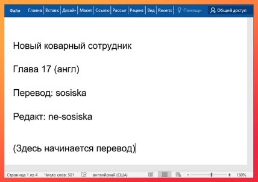
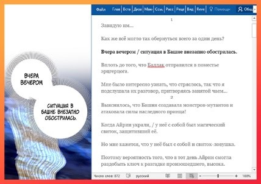
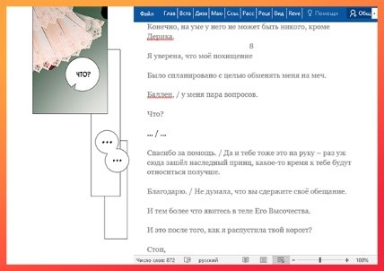
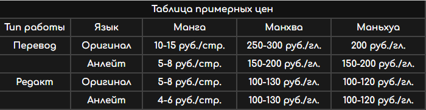
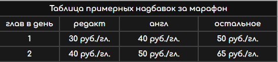
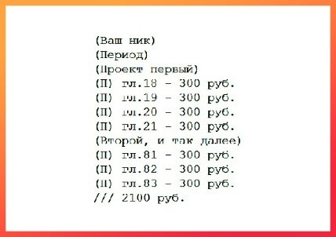

Правила для переводчиков и редакторов
Дата последнего изменения: 28.05.2022.Для ознакомления с нововведениями вы можете воспользоваться соответствующим списком (Пока нет страницы, правила не обновлялись с момента создания страницы).
Данная статья содержит информацию об общих понятиях, правах и обязанностях переводчиков и редакторов команды «tfoxs».
Правила и обязанности, указанные в этой статье, распространяются на каждого работника команды «tfoxs».
Становясь членом команды, каждый работник соглашается на действующие и всевозможные будущие изменения правил.
Основная информация:
Danat — командир команды «tfoxs».Azulla — куратор перевода и редакта. Отвечает за распределение работы и подсчёт оплаты труда.
Внутренний распорядок команды.
Основные понятия:
Работник — каждый из членов команды «tfoxs».Ник — псевдоним, используемый при указании авторства.
Проект — продукт, которым непосредственно занимается команда. манга/манхва/маньхуа.
Анлейт — вариант перевода проекта на английском языке.
Марафон — ускоренная работа над проектом.
Пробный период — условный период, в ходе которого идёт оценка ваших умений на практике. В том случае, если работа окажется низкого качества, оплаты за неё не последует.
Глоссарий — особый словарь, который должен вести переводчик и редактор проекта, включая в него поимённую характеристику героев, их псевдонимы, особенности и умения; места, предметы, ранги и прочие понятия, важные для сюжета.
Личный банк – сумма которую команда должна работнику. Все отчёты с положительным знаком добавляются личный банк, а выводи с отрицательным.
Набор в команду
Каждый желающий может получить пробное задание на вступление в команду на желаемую должность, для этого нужно написать нам в группу vk.После успешного прохождения тестового задания вам будет предоставлена ссылка на данный мануал и приглашение в группу новичков, а также вы будете поставлены на пробный период.
Процесс получения и выполнения работы:
- В основной беседе и в беседе новичков Azulla регулярно оставляет сообщения о наборе работников на проект. Чтобы взяться за проект, нужно написать ему в личные сообщения.
- Перед началом работы вам будет предоставлена вся нужная информация: ссылка на беседу по проекту, файлы с переводами прошлых глав и весь необходимый материал для перевода. Azulla также обозначит вам сроки сдачи готовы работ.
- Переводить нужно все фразы (в баблах и за их пределами) и все знаки, звуки же чаще всего переводить не нужно. (в случае, если будет необходимо переводить звуки, Azulla вас об этом уведомит)
- Глоссарий нуждается в обновлении, если появляется новый персонаж, место, предмет, техника или меняется описание списка ранее.
- Стоимость выполненной главы вы можете спросить лично, т.к. в зависимости от проекта она может отличаться.
- Во время пробного периода выполненную работу можно отправлять в беседу проекта.
По завершении пробного периода вам будет предоставлены ссылки-приглашения в рабочую группу и общую беседу.
Все последующие работы вам будет нужно отправлять в соответствующие обсуждения «перевод» или «редакт» рабочей группы «tfoxs».
В случае, если на проекте стартует марафон, оплата и темп работы соответственно повышаются. В этом случае задержки в переводе и редакте крайне нежелательны. По окончании марафона оплата и темп работы возвращаются к первостепенным значениям.
Сдавать работу в обсуждения (или в беседу проекта во время пробного периода) необходимо в следующем виде:
- Название проекта;
- Номер главы (для переводчиков: язык, с которого был выполнен перевод);
- Свой ник;
- Прикреплённый файл выполненной работы.
Работник имеет право:
- На получение работы;
- На отказ от проектов и уход из команды;
- На предоставление информации о личном банке;
- На оплату, соразмерную потраченному труду;
- На продолжительный отпуск;
- На инициативу внутри команды;
- На получение информации об изменении правил.
Работник обязан:
- Своевременно выполнять поставленные задачи;
- Уведомлять коллег по проекту о завершении работы (пинг в vk) и сдавать работу в срок;
- Соблюдать правила внутреннего трудового распорядка;
- Выполнять установленные в команде правила;
- За нарушение этих обязанностей работник может получить штраф.
Работнику запрещено:
- Разглашать какую-либо информацию о проекте (о том, на какой стадии ведётся работа, о сумме оплаты, сроках и прочем) всем лицам, за исключением командира команды, любого из кураторов и других работников по проекту;
- Распространять материалы ещё не вышедшего проекта иным лицам, не являющимися членами команды «tfoxs»;
- За нарушение этих запретов работнику грозит штраф и исключение из команды.
Команда и её представители имеют право:
- Хранить как общую (страницу vk и псевдоним), так и личную информацию (ФИО, реквизиты, почту и др.) о работнике;
- Использовать личные сообщения для подтверждения тех или иных нарушений;
- Разглашать общую информацию о работниках по своему усмотрению (например, вести чёрный список «недобросовестных работников» и их твинков).
Обязанности переводчика:
- Переводить отведённые главы на стабильном хорошем уровне;
- Соблюдать правила оформления текста;
- Вести и обновлять глоссарий переводимых проектов. Обновлять в течение 3-5-ти дней с момента перевода последней главы.
Обязанности редактора:
- Править текст за переводчиком (проверять орфографию, пунктуацию, лексику, терминологию и смысловую целостность текста, приводя написанное в «идеальное» состояние перед публикацией);
- Соблюдать правила оформления текста;
- Сверяться с материалом перевода (помечать содержащиеся в главе знаки, подписи, делать другие необходимые пометки, исправлять несоответствующий изображению перевод, дополнять текст отсутствующими репликами в случае пропуска их переводчиком, спрашивать у переводчика по проекту);
- Вести и обновлять глоссарий переводимых проектов. Обновлять в течение 3-5-ти дней с момента перевода последней главы.
Скорость работы над главами:
Работники должны укладываться в отведённые рамки по скорости:
Перевод:
- Во время марафона – указанная скорость в день;
- Во время отставания – не реже одной главы в 5 дней;
- Для манги – 1-3 дня на главу, в зависимости от объёма;
- В обычном режиме - не реже одной главы в 7 дней.
Редакт:
- Во время марафона – день с момента перевода;
- Во время отставания – день-два с момента перевода;
- Для манги – день-два с момента перевода;
- В обычном режиме – до четырёх дней с момента перевода.
Правила оформления текста:
- Перевод сдаётся в текстовом формате: .txt, .doc, .docx;
- Имя файла должно содержать номер главы;
- Содержимое файла должно начинаться с названия, номера главы проекта и указания своего никнейма;
 - Если это манга, также необходимо указывать нумерацию страниц;
- Перевод манги и его запись происходит справа налево, манхвы - слева направо;
- Каждая реплика должна начинаться с новой строки;
- Если фраза делится на "двойной" бабл, то её перевод нужно разделить знаком "/", (желательно разделять предложения на до и после запятой, но если знаков препинания в середине текста не наблюдается, сделать это нужно соответственно смыслу и размеру баблов);
 - Предложения должны логически завершаться соответствующими знаками. (см. ниже) Исключения — это звуки, имена героев и места действия, знаки препинания на их конце стоять не должны;
- Звуки/реплики на фоне должны быть помечены с помощью звёздочки “*” в начале строки, либо в конце после фразы в круглых скобках;
- Знаки, которые можно использовать: "?!", "?!.", "?..", "!..", "!!!", "???", "...", "~", "!~", "?~"
(В случае необходимости можно воспользоваться этим ресурсом); - Если в бабле присутствуют только знаки, ровно как и реплики, их нужно написать;
 - Слоги или буквы, количество которых намеренно увеличивают в слове, нужно писать через дефис. («Ха-ха-ха», «А-а-а!»);
- Примечания для читателей выносятся на новую строку и отдельно помечаются для тайпера;
- В системах допускается использование квадратных скобок, если они присутствуют в оригинале;
- Пометки и пояснения для редактора/тайпера оставляются на новой строке и отдельно помечаются в круглые скобки;
- Ненужные пометки нужно удалять.
Оплата:
В зависимости от объёма главы одного проекта могут быть оценены по-разному.Примерная таблица оплаты:

Таблица доплаты за марафон:

Вывод доступен на:
- Онлайн-кошельки: Юмани или Киви (номер счёта);
- Украина: Монобанк, Приватбанк (Номер карты и Фамилия&Имя на англ. языке);
- Беларусь: БеларусБанк (IBAN);
- Страны СНГ: Visa, MIR, MasterCard (Номер карты/мобильный телефон; ФИО).
Реквизиты для выплат нужно предоставить Данату.
Подсчёт зарплат идёт в конце каждого месяца. Таким образом, в учёт идёт любая работа, предоставленная с 1го числа произвольного месяца до начала следующего. (ровно до 00:00).
После подсчёта оплаты вам в личные сообщения придёт ваш личный отчёт о проделанной работе, который предоставит Azulla. Как только вы его получите, у вас будет возможность свериться с ним. Вам также следует уточнить у Azulla, если отчёт вдруг не пришёл.
Пример отчёта проделанной за месяц работы:

Вывод происходит 10го числа ежемесячно, если в личном банке больше 2000 руб.
Примечание: При переводе и конвертации валют возможна комиссия со стороны банка. Наша команда не несёт ответственности за снятие процентов.
Штрафная система:
- штраф в размере выполненной главы, если она крайне низкого качества;
- штраф по усмотрению куратора за нарушение сроков и несоблюдение дедлайнов во время марафона;
- штраф в размере от половины суммы оплаты главы, если нарушены сроки выполнения работы более чем на 2 дня без каких-либо предупреждений;
- штраф при отсутствии предупреждения об уходе с проекта в определённым куратором размере;
- штраф за необновляемый/незаконченный глоссарий в размере оплаты минимум одной главы;
- штраф в размере от 60% заработной платы до полной её стоимости за разглашение внутренней информации команды «tfoxs», указанной в правилах.